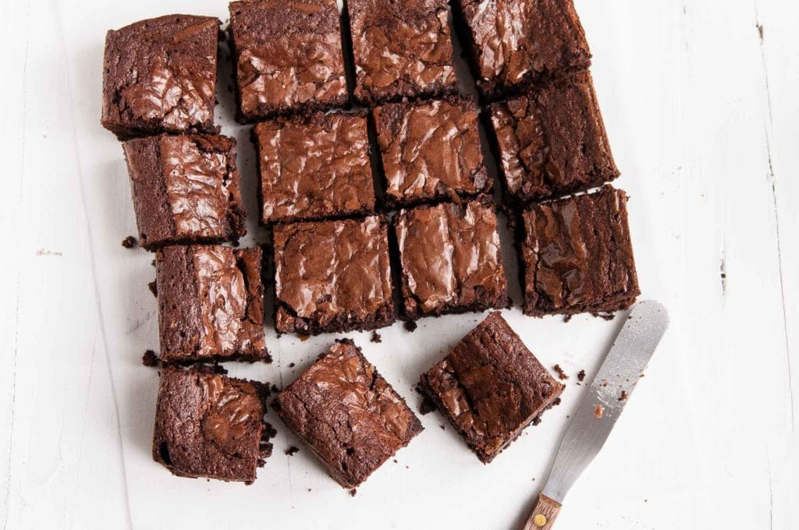

Easy Chocolate Brownies

A recipe for easy yet delicious chocolate brownies
When it's getting colder and darker, the last thing you want to do is spend a lot of time following complicated recipes, when all you really want is something sweet and chocolatey to curl up on the couch with.
This is a recipe for gooey and decadent chocolate brownies that won't take all day to make.
Ingredients
- 275g softened butter
- 375g of caster sugar
- 4 large eggs
- 75g cocoa powder
- 100g self-raising flour
- 100g plain chocolate chips
Steps
- Preheat the oven to 180c
- Cut a rectangle of non-stick baking parchment to fit the base and sides of a 30cm x 23cm x 4cm traybake or roasting tin. Grease the tin and then line it with the paper, pushing it neatly into the corners.
- Measure all the ingredients into a large bowl and mix with a hand-held electric mixer until evenly blended.
- Spoon the mixture into the prepared tin, scraping the sides of the bowl with a plastic spatula to remove all of it. Spread the mixture gently to the corners of the tin and level the surface with the back of the spatula.
- Bake for 40 to 45 minutes, until the brownies have a crusty top and a skewer inserted into the centre comes out clean. Cover loosely with foil for the last 10 minutes if the mixture is browning too much.
- Allow the brownies to cool in the tin and then cut into 24 squares. Store in an airtight tin.